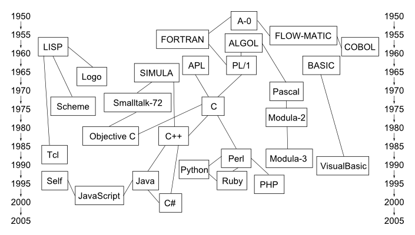

Qué es un lenguaje de programación
El "cerebro" de un ordenador es la Unidad Central de Procesamiento (CPU). En general una CPU no puede almacenar más que unos pocos números y realizar operaciones matemáticas básicas con ellos. Además esos números se pueden recibir de o enviar a la memoria o a los distintos dispositivos de entrada y salida (teclado, monitor, disco duro, impresora, etc). Para cada una una de estas operaciones (obtener números de un sitio, hacer cálculos con esos valores, enviar el resultado a otro sitio) existe una instrucción diferente y cada CPU tiene su propio juego de instrucciones, más o menos amplio dependiendo de la complejidad de la CPU.
En la memoria del ordenador se puede guardar una secuencia de esas instrucciones, que el ordenador es capaz de seguir desde el principio hasta el final (aunque esas instrucciones no tienen por qué ejecutarse siempre en el mismo orden porque existen instrucciones para saltar de un punto a otro de la secuencia de instrucciones). Esas secuencias se llaman programas ejecutables.
Cualquier función que realice un ordenador, por sofisticada que parezca, en realidad no es más que una larga secuencia de instrucciones elementales. Para los humanos resulta muy complicado escribir directamente los programas ejecutables porque cualquier tarea requiere muchísimos pasos, que el ordenador ejecuta de forma instantánea, pero para que los ordenadores funcionen es necesario disponer de programas ejecutables.
Los lenguajes de programación se han creado para facilitar la elaboración de programas ejecutables. Un lenguaje de programación es un lenguaje artificial diseñado para dictar instrucciones a un ordenador, pero tienen la ventaja de que no es necesario desmenuzar las tareas tanto como lo requiere la CPU si no que permiten definir tareas de forma más abstracta. Por ejemplo, un lenguaje de programación puede tener una instrucción para calcular raíces cuadradas, aunque haya CPUs que no tengan la capacidad de calcular raíces cuadradas.
Existen muchos lenguajes de programación diferentes, pero en general, un programador que quiere conseguir que el ordenador realice determinadas operaciones, tiene que seguir estos pasos:
- El programador escribe una secuencia de instrucciones siguiendo las reglas de un lenguaje de programación. Esa secuencia de instrucciones se guarda en uno o varios archivos de texto. A estos archivos se les llama código fuente del programa.
- Mediante un programa especial (llamado compilador o intérprete) capaz de realizar esa tarea el ordenador convierte los archivos de texto en archivos ejecutables, es decir, traduce la secuencia de instrucciones escritas por el programador en instrucciones. A estos archivos ejecutables se les llama programas ejecutables.
- El programador o cualquier otro usuario le puede pedir al ordenador que ejecute el programa ejecutable.
En el ejemplo citado de las ráices cuadradas, el compilador o intérprete tendría que ser capaz de convertir la instrucción de raíz cuadrada que hubiera escrito el programador en una serie de sumas, restas, multiplicaciones o divisiones que acaben dando el resultado deseado.
En Informática, normalmente se utiliza el término programa para referirse a las dos cosas:
- al fichero de texto escrito por un programador en algún lenguaje de programación
- al fichero ejecutable que ejecuta el ordenador para producir un resultado.
Eso puede causar alguna confusión, pero se espera que el lector/oyente entienda por el contexto de cuál de los dos conceptos se está hablando.
Las ventajas de usar lenguajes de programación son numerosas:
- los lenguajes de programación son infinitamente más comprensibles para los humanos que las secuencias de instrucciones.
- un mismo código fuente se puede acabar ejecutando en ordenadores con diferentes juegos de instrucciones, usando compiladores o intérpretes que sean capaces de realizar la traducción.
- mejorando los compiladores o intérpretes, un mismo código fuente se puede acabar convirtiendo en programas ejecutables más rápidos.
Los ordenadores siguen al pie de la letra las instrucciones de los programas ejecutables. Por tanto, los programas deben tener en cuenta todos los posibles resultados de todas las instrucciones e incluir las instrucciones a seguir en cada caso, de manera que el ordenador no se quede atascado en algún punto del programa. En el ejemplo citado de las raíces cuadradas, el programa tiene que tener en cuenta que no se pueden calcular las raíces cuadradas de números negativos (sin recurrir a los números complejos) y no tiene que pedirle al ordenador que lo haga porque seguramente se producirá un error y el programa se interrumpirá.
Genealogía de los lenguajes de programación
El inicio de la informática moderna se suele situar en 1946, con ENIAC, el primer ordenador de propósito general (aunque entre 1936 y 1945 Konrad Zuse construyó en Alemania varios prototipos de ordenadores de propósito general que fueron destruidos durante la segunda guerra mundial).
Esos ordenadores, como todos los que han venido después, tenían su propio lenguaje máquina, el conjunto de instrucciones que puede ejecutar la CPU. Para hacer manejable la tarea de programar los ordenadores, se crearon los lenguajes ensamblador, que utilizan palabras para referirse a las instrucciones. El problema de estos lenguajes es que están ligados a la CPU utilizada.
En los años 50 aparecieron los lenguajes de programación independientes de una máquina en concreto y en los años 60 se desarrollaron la mayoría de los conceptos en que se basan los actuales lenguajes de programación, perfeccionados a lo largo del tiempo.
Desde entonces, se han inventado muchísmos lenguajes de programación, que han permitido a los programadores resolver problemas cada vez más complejos.
La imagen siguiente, basada en un dibujo de la Wikipedia, muestra algunos de los lenguajes de programación más importantes de la historia, la mayoría de los cuales se siguen utilizando en la actualidad:

- La posición vertical de cada lenguaje indica su fecha de creación. Posteriormente, cada lenguaje ha seguido su propia evolución, la gráfica sólo indica su origen.
- Las líneas que unen los lenguajes significan que un lenguaje ha influido en el diseño del otro, aunque el dibujo es una simplificación y hay muchas más influencias que las indicadas.
- Algunos de esos lenguajes han sido importantes por la cantidad de aplicaciones que se han escrito con ellos, mientras que otros lo han sido por introducir ideas radicalmente nuevas que han influido en los lenguajes posteriores.
- Aunque desde el año 2000 se han desarrollado muchos lenguajes nuevos (Clojure, Erlang, F#, Go, Julia, Rust, etc.), se necesita que pase tiempo para poder considerarlos realmente importantes para la historia de la programación y distinguirlos de simples modas (al margen de que, debido al tamaño actual de la industria informática, resulta cada vez más difícil que un lenguaje nuevo supere a los anteriores, pues no solamente tiene que tener ventajas evidentes sobre los anteriores, sino que debe competir con todas las herramientas auxiliares y colecciones de programas disponibles en los lenguajes antiguos).
Tipos de lenguajes de programación
Se pueden dar algunos criterios generales para distinguir unos lenguajes de otros, aunque cada vez más los lenguajes incluyen características que antes distinguían unos lenguajes de otros y las frontera están menos definidas. Algunos de esos criterios son los siguientes:
Lenguajes imperativos y lenguajes declarativos
- Los lenguajes imperativos, en los que el programador escribe paso a paso las tareas a realizar. Entre ellos, están
- los lenguajes modulares, que permiten definir bloques de instrucciones y reutilizarlos para construir programas más complejos (Algol, COBOL, Fortran, etc.).
- los lenguajes procedurales, que permiten definir procedimientos (rutinas, subrutinas, funciones, etc) y reutilizarlos (BASIC, Pascal, C, etc.).
- los lenguajes orientados a objetos, en los que no se permite que cualquier porción del programa acceda a cualquier dato, sino que se agrupan en clases todos los procedimientos que se pueden aplicar a un tipo de datos (Smalltalk, C++, Java, etc.).
- Los lenguajes declarativos, en los que el programador no escribe los pasos a realizar, sino los pasos permitidos en cada situación y es el ordenador el que busca la secuencia adecuada. Entre ellos están:
- los lenguajes funcionales, que utilizan como elemento básico las funciones y la recursividad (APL, Haskell, Erlang, etc.).
- los lenguajes lógicos, que expresan las relaciones en términos lógicos y utilizan reglas de inferencia lógica para conseguir el resultado (Prolog, Datalog, etc.).
Existen lenguajes puros que siguen a rajatabla los principios de uno de estos tipos, pero la mayoría de lenguajes permiten mezclar tipos de programación diferentes.
No se puede afirmar la superioridad intrínseca de un tipo de lenguaje sobre otro, puesto que existen problemas que se abordan mejor con un tipo de lenguaje que otro.
Por ejemplo, en los años finales del siglo XX y en los primeros del siglo XXI, con el aumento de potencia de los microprocesadores, parecía que los lenguajes imperativos habían ganado la partida a los declarativos. Pero en los últimos años el crecimiento de la potencia bruta de las CPU individuales se ha detenido y en su lugar lo que se multiplica es el número de núcleos en cada CPU y en esa situación en la que lo más importante es poder "paralelizar" los programas (que se puedan ejecutar los programas en varios núcleos a la vez), los lenguajes declarativos llevan ventaja, por lo que ultimamente está aumentando el interés por esos lenguajes.
Lenguajes compilados y lenguajes interpretados
El programa de ordenador que es capaz de convertir el programa fuente escrito por el programador en el programa ejecutable que ejecuta el ordenador puede realizar esa tarea de dos formas distintas:
- en un lenguaje compilado, la tarea de conversión se realiza una sola vez. El compilador crea un fichero ejecutable a partir del código fuente del programa y a partir de entonces el usuario ejecuta el fichero ejecutable tantas veces como quiera, sin tener que volver a utilizar el código fuente.
- en un lenguaje interpretado, la tarea de conversión se realiza cada vez que se quiere ejecutar el programa. El intérprete lee una instrucción del programa fuente, la convierte en código ejecutable, la ejecuta y pasa a la siguiente. En este caso, el usuario necesita tener el programa fuente para poder ejecutarlo.
En principio, cualquier lenguaje de programación puede ser compilado o interpretado, aunque por tradición hay lenguajes que suelen utilizar compiladores y otros que suelen utilizar intérpretes.
Se solía decir que para un mismo programa fuente, la compilación produce programas ejecutables más rápidos que los programas interpretados, pero la tendencia es a que esas diferencias se reduzcan.
También se debe tener en cuenta que las preferencias por compiladores o intérpretes pueden deberse a motivaciones no técnicas. Por ejemplo, el programador de software comercial preferirá el uso de lenguajes compilados para poder comercializar el programa ejecutable sin necesidad de hacer público el programa fuente, mientras que el programador de software libre no tiene problemas con los lenguajes interpretados puesto que va a proporcionar también el código fuente.
Lenguajes tipificados y lenguajes no tipificados
En programación, los elementos que pueden almacenar información se llaman variables. Dependiendo del tipo de información (números, letras, etc) que se almacena se usan variables de un tipo o de otro. Una característica que diferencia unos lenguajes de otros es la rigidez o permisividad con respecto a los tipos de variables.
- Los lenguajes tipificados (también llamados de tipado estático) son aquellos en los que una variable guarda siempre un mismo tipo de datos. En algunos lenguajes tipificados se exige al programador que declare el tipo de cada variable y en otros lo determina el compilador. En algunos lenguajes tipificados se permite la conversión entre tipos de variables y en otros no.
- Los lenguajes no tipificados (también llamados de tipado dinámico) no requieren la declaración de tipo de las variables y una misma variable puede almacenar valores de tipos distintos a lo largo de la ejecución del programa.
Algunas ventajas de los lenguajes tipificados es que permiten detectar errores de tipo (cuando un dato de un tipo se guarda en una variable de otro tipo), que permiten a los compiladores optimizar mejor el código ejecutable y, en el caso de exigir la declaración de tipo de las variables, que facilitan la comprensión de los programas.
Algunas ventajas de los lenguajes no tipificados es la mayor flexibilidad de los programas, y una serie de características que aunque no se derivan necesariamente de la falta de tipificación suelen presentar los lenguajes no tipificados: simplicidad, mayor número de tipos de datos, metaprogramación (introspección, eval, etc.).

{kind=link}